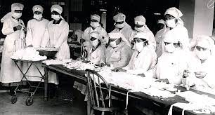
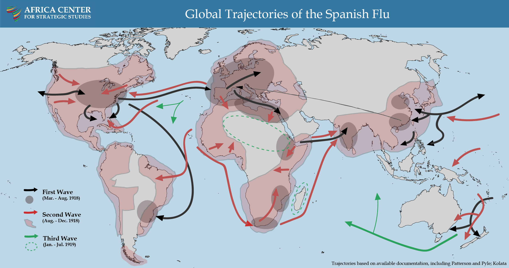
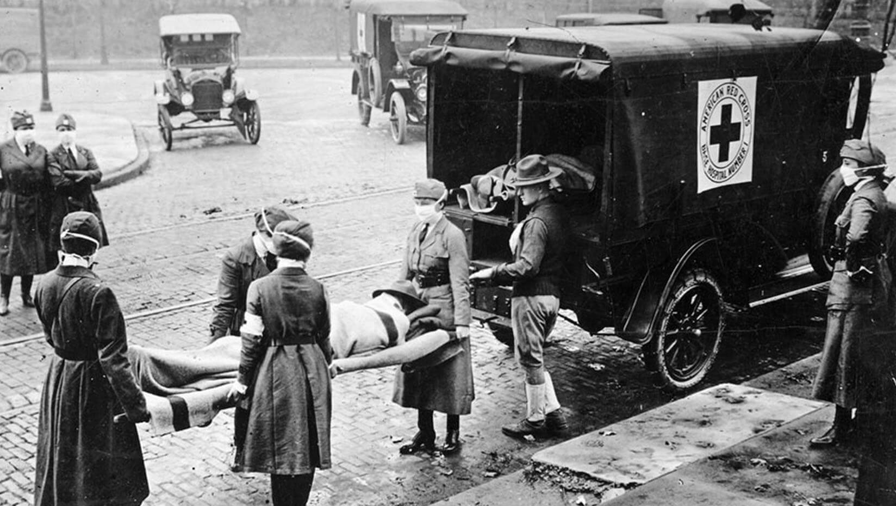

In Europe in 1918, influenza spread through Spain, France, Great Britain and Italy, causing havoc with military operations during the First World War. The influenza pandemic of 1918 killed more than 50 million people worldwide. In addition, its socioeconomic consequences were huge.
“Spanish flu”, as the infection was dubbed, hit different age-groups, displaying a so-called “W-trend”, typically with two spikes in children and the elderly. However, healthy young adults were also affected.
In order to avoid alarming the public, several local health authorities refused to reveal the numbers of people affected and deaths. Consequently, it was very difficult to assess the impact of the disease at the time.
Although official communications issued by health authorities worldwide expressed certainty about the etiology of the infection, in laboratories it was not always possible to isolate the famous Pfeiffer’s bacillus, which was, at that time, deemed to be the cause of influenza.
The first official preventive actions were implemented in August 1918; these included the obligatory notification of suspected cases and the surveillance of communities such as day-schools, boarding schools and barracks.
Identifying suspected cases through surveillance, and voluntary and/or mandatory quarantine or isolation, enabled the spread of Spanish flu to be curbed. At that time, these public health measures were the only effective weapons against the disease, as no vaccines or antivirals were available.
Virological and bacteriological analysis of preserved samples from infected soldiers and other young people who died during the pandemic period is a major step toward a better understanding of this pandemic and of how to prepare for future pandemics. On March 4, 1918, Albert Gitchel, a cook at Camp Fuston in Kansas, was afflicted by coughing, fever and headaches. His was one of the first established cases in the history of the so-called Spanish flu. Within three weeks, 1100 soldiers had been hospitalized, and thousands more were affected .
In Europe, the disease spread through France, Great Britain, Italy and Spain, causing havoc with First World War military operations. Three quarters of French troops and more than half of British troops fell ill in the spring of 1918. In May, the flu hit North Africa, and then Bombay in India; in June, the first cases were recorded in China, and in July in Australia. This first wave is not universally regarded as influenza; the symptoms were similar to those of flu, but the illness was too mild and short-lasting, and mortality rates were similar to those seen in seasonal outbreaks of influenza . In August, a deadly second wave of the Spanish pandemic ensued. This was probably caused by a mutated strain of the virus, which was carried from the port city of Plymouth in south-western England by ships bound for Freetown in Sierra Leone and Boston in the United States. From Boston and Freetown, and from Brest in France, it followed the movements of the armies. This second wave lasted almost six weeks, spreading from North America to Central and South America, from Freetown to West Africa and South Africa in September, and reaching the Horn of Africa in November. By the end of September, the flu had spread to almost all Europe, including Poland and Russia. From Russia the epidemic spread throughout northern Asia, arrived in India in September, and in October it flared up again in China. In New York, the epidemic was declared to be over on 5th November, while in Europe it persisted, owing to the food and fuel shortages caused by the war. Most cases of illness and death due to the pandemic occurred during the second wave .

Deadly clusters of symptoms were recorded, including nasal hemorrhage, pneumonia, encephalitis, temperatures of up to 40°C, nephritis-like blood-streaked urine, and coma . While the new virus struck military personnel, influencing war strategies, it did not spare those who lived in privileged conditions, one of the most famous cases being that of the King of Spain, Alfonso XIII, who was certainly not afflicted by the privations of the war. By December 1918, much of the world was once again flu-free, and in early 1919 Australia lifted its quarantine measures. However, in the austral summer of 1918-1919, more than 12,000 Australians were hit by the third wave of the disease. In the last week of January 1919, the third wave reached New York, and Paris was hit during the post-war peace negotiations. Overall, fewer people were affected by the disease during the final influenza wave. Nevertheless, mortality rates are believed to have been just as high as during the second wave. In May 1919, this third pandemic was declared finished in the northern hemisphere. In Japan, however, the third epidemic broke out at the end of 1919 and ended in 1920.
There was no cure for the disease; it could only be fought with symptomatic treatments and improvised remedies. Moreover, the return of soldiers from the war fronts, the migration of refugees and the mobility of women engaged in extra-domestic activities had favored the rapid spread of the virus since the onset of the first pandemic wave. Preventive public health measures were therefore essential, in order to try to stem the spread of the disease. The first official preventive measures were implemented in August 1918; these included the obligatory notification of suspected cases, and the surveillance of communities such as day-schools, boarding schools and barracks. In October 1918, local authorities in several European countries strengthened these general provisions by adding further measures, for instance the closure of public meeting places, such as theaters, and the suspension of public meetings. In addition, long church sermons were prohibited and Sunday instruction was to last no more than five minutes.
Street cleaning and the disinfection of public spaces, such as churches, cinemas, theaters and workshops, were considered to be cornerstones in controlling the spread of Spanish flu, in addition to banning crowds outside shops and limiting the number of passengers on public transport. However, they did not prove very effective. Among public health interventions, local health departments distributed free soap and provided clean water for the less wealthy; services for the removal of human waste, the regulation of toilets, and the inspection of milk and other food products were organized; spitting in the street was forbidden, which determined the spread of pocket spittoons, and announcements in newspapers and leaflets advertised the therapeutic virtues of water.
To simplify mortuary police services, many administrations in the worst affected centers in Italy set up collection points for corpses and abolished all the rituals that accompanied death. In addition, identifying cases of illness through surveillance, and voluntary and/or mandatory quarantine or isolation, also helped to curb the spread of Spanish flu, in a period in which no effective vaccines or antivirals were available.
The influenza pandemic of 1918 killed more than 50 million people and caused more than 500 million infections worldwide. In the military camps and trenches during the First World War, the influenza pandemic struck millions of soldiers all over the world, causing the deaths of 100,000 troops. However, it is not clear whether it had an impact on the course of the war. The highest morbidity rate was among the Americans in France, during the Meuse-Argonne offensive on the Western Front from September 15 to November 15, 1918, when over one million men of the US Army fell sick.
General understanding of the healthcare burden imposed by influenza infections was unclear. Several factors were suspected of increasing the risk of severe flu: length of service in the army, ethnicity, dirty dishes, flies, dust, overcrowding and the weather. In overcrowded camps, the risk of flu, and its principal complication, pneumonia, increased 10-fold . Bacterial pneumonia secondary to influenza was the overwhelming cause of death, owing to increased susceptibility due to transient immuno-pathological effects and dysregulated, pathological cellular immune responses to infections.

It is difficult to ascertain the mortality rate of the pandemic, as data on deaths were transmitted in incomplete form to the Central Statistical Office. In Italy, the “Albo d’oro” collected documentation on the number and demographic characteristics of the soldiers who died during the conflict, which enabled more accurate data to be obtained on deaths due to influenza among military personnel . Military nurses and medical officers were intensively and repeatedly exposed to the influenza A (H1N1) pandemic strain in many areas. However, during the lethal second wave, nurses and medical officers of the Australian Army, and other groups of healthcare workers, displayed influenza-related illness rates similar to those of other occupational groups, and mortality rates that were actually lower. These findings suggest that the occupational group most intensively exposed to the pandemic strain had relatively low influenza-related pneumonia mortality rates [17, 18]. The dynamic relationship between the host and the influenza virus during infection, the unusual epidemiological features and the host-specific properties that contributed to the severity of the disease in the pandemic period still remain unknown.
Conclusions:

The 1918 pandemic influenza was a global health catastrophe, determining one of the highest mortality rates due to an infectious disease in history. Virological analysis of preserved samples from infected soldiers and others who died during the pandemic period is a major step toward a better understanding of this pandemic. Such knowledge may contribute to the discovery of new drugs and the development of preventive strategies, including insights into the appropriate timing of the administration of antivirals and/or antibiotics, thereby providing indications on how to prepare for future pandemics. The 1918-1919 pandemic led to enormous improvements in public health. Indeed, several strategies, such as health education, isolation, sanitation and surveillance, improved our knowledge of the transmission of influenza, and are still implemented today to stem the spread of a disease that has a heavy burden.
Back to Homepage© VERTEX SYSTEM. Develop by TranVietBach. All Rights Reserved.